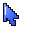
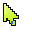
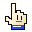
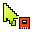
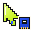

الهوية البصرية
يحمل شعار شوق آور اسم الموقع بحروف عربية مبنية على شبكة بكسل، وإلى جوارها علامة مختصرة تصلح لأيقونة المتصفح. وتظهر كتابة SHAWQ AWAR في الصيغة المرافقة للشعار. كارتو هو الشخصية التي ترافق الزائر، وتحتفظ برسومها وتعبيراتها. تجمع هذه الصفحة صيغ الشعار وقواعد استخدامه، وتوثّق ألوان الموقع وخطوطه ورموزه وحركته وصوته.
شعار شوق آور



الاسم الرسمي شوق آور، والكتابة المرافقة SHAWQ AWAR. يتكوّن الشعار B من حروف عربية بكسلية ورمز أزرق كهربائي #2F5BFF بتفاصيل ليمونية #C8F31D. تُستخدم نسخة الحبر على الأسطح الفاتحة، والورقية على الأسطح الداكنة. اترك حول الشعار مساحة واضحة وحافظ على نسبه وألوانه الأصلية.
كارتو — شريط ألعاب بروح مرحة
كارتو شخصية مرسومة على هيئة شريط ألعاب. يرحّب بك في الرئيسية، ويظهر عند البحث أو حفظ لعبة ليعبّر عن حالة الصفحة. صُمّمت تعابيره بأسلوب بكسلي يناسب رسوم الموقع.
صغير في حجمه، واضح في تعبيره.
شريط ألعاب بملصق كريمي ووجه بسيط: عينان متساويتان، ابتسامة قصيرة، وأطراف صغيرة. تظهر نقاط الاتصال الذهبية في أسفله، وتحيط به حافة ملصق فاتحة تحفظ وضوحه في المظهرين.
كارتو يرافق الاكتشاف؛ يرحّب في الرئيسية، يفكّر مع البحث، ويفرح مع إنجازك. لا يقاطع القراءة ولا يتنقل عشوائيًا فوق المحتوى.
فكرة الهوية
جاء الاسم من مقام موسيقي تعرّف إليه صاحب المشروع وهو يعزف على العود. ومنه أخذ شوق آور فكرته: جلب الماضي الذي نشتاق إليه، من ألعاب قديمة إلى مجلات وصور نعود إليها.
اقرأ قصة الاسمتظهر الحروف البكسلية في الشعار، ويستمر أسلوب الملصقات في البطاقات بحدودها وظلالها. كارتو هو رفيق الزائر في الموقع، ويظهر في لحظات الترحيب والبحث والحفظ.
لوحة الألوان
يتدرّج المظهر الفاتح من العاجي إلى الأزرق الضبابي، والداكن من الأزرق الحبري إلى الأردوازي. تتشارك البطاقات والشريط العلوي هذه الألوان، ويصبح النص حبريًا عند ظهور التحديد الليموني. يدخل البنفسجي كتدرّج خفيف في المساحات البارزة، ويحدد الفيروزي التركيز ويظهر في حواف زجاج CRT.
#101216النصوص والحدود#F3EBDDالخلفية الأساسية#C8F31Dالعناوين والتمييز#FF5B2Eالأزرار والشارات#2F5BFFالزخارف واللمسات#5E42BCلمسات الأجهزة والخلفيات#007C73التركيز وتوهج الشاشةالخطوط
لالزار
عنوان جريء للملصق
لعناوين الصفحاتتجوال
نص واضح ومريح للقراءة
للنصوص والمقالات والقاموسSilkscreen
PLAYER ONE · SHAWQ AWAR
للعناوين اللاتينية الصغيرةالمجلات: الغلاف هو البطل
تحتفظ المكتبة بألوان الأغلفة الأصلية، داخل حافة ورقية تحمل لغة ملصقات شوق آور. تُرفع زاوية الغلاف عند التفاعل، وتبقى الحركة قصيرة وتحترم تقليل الحركة. للقارئ خلفية محايدة وصفحة بيضاء؛ لا يعاد تلوين صفحات المجلات عند تبديل مظهر الموقع. تظهر الصفحة كاملة افتراضيًا، مع شريط تنقل صغير أسفلها وأدوات إضافية في نافذة مستقلة. تُقلب الورقة حول حافتها بحركة ثلاثية الأبعاد قصيرة؛ والسحب إلى اليمين ينقل إلى الصفحة التالية. يُستبدل الطي بتبديل مباشر عند تقليل الحركة. تُحفظ علامات الصفحات اليدوية محليًا، ويُفتح العدد من البداية أو من آخر علامة وضعها القارئ، دون حفظ تلقائي لموضع القراءة. وتُجهز الصفحات المجاورة وتُعاد الاستفادة من الرسم السابق لتخفيف الانتظار. تُقرأ المجلات من صور صفحات محسّنة تُطلب عند الحاجة، دون انتظار تهيئة ملف PDF؛ وتبقى نسخة PDF للتنزيل.
استعرض المكتبةتُشغّل نغمة قصيرة من المقطع المرفق عند فتح العدد إذا كان صوت الموقع مفعّلًا. تبدأ النغمة عند فتح العدد. إذا طلب المتصفح تفاعلًا، يظهر زر «تشغيل النغمة» في القارئ.
تحفك الفنية: اختَر ما تلعبه
بطاقات بأغلفة مصغرة وأسماء واضحة بخط Tajawal بدل الخط البكسلي الصغير. يُعرض الجهاز ونوع اللعبة بجوار الاسم، وتُغيَّر حالة اللعب من قائمة مباشرة داخل البطاقة. تظل الحالات الخمس محفوظة بمفاتيحها السابقة، مع بحث وتصفية بالجهاز والتصنيف وترتيب حسب خطة اللعب أو الاسم أو تاريخ الإضافة. تستخدم الواجهة ألوان شوق آور نفسها، وتتكيف البطاقات مع الجوال، ويظهر بديل عند تعذر تحميل الغلاف.
افتح قائمتك ←رموز مرسومة، بهوية واحدة
رُسمت الأجهزة السبعة على شبكة 64 وحدة بحدود موحّدة وحافة ورقية، مع موازنة أحجامها بصريًا: Xbox 360 بانحناء هادئ وحلقة تشغيله، وWii النحيف مع قاعدة مسطحة وريموت منفصل، وجسم PS2 الأفقي المتدرج ودرج أقراصه، وغطاء PS3 المقوّس، وعصاتي Vita، وشاشة 3DS العلوية الأعرض وعصاه الدائرية، وشاشتا DS المتقاربتان مع القلم. لكل جهاز وقسم هيئة مميزة تقرّب معناه: ملامح الأجهزة، وكتب الموسوعة، وصندوق الكنز، وحروف التعريب. توحّدها حافة ورقية وخط جرافيتي واضح، دون تكرار إطار يحجب اختلافها. الليموني يجمع العائلة، والأزرق يحدد التفاصيل، والبرتقالي يبرز القلب. الرموز ليست شعارات الشركات الرسمية، وتظل أسماؤها مكتوبة بجوارها.
رمز Game Boy Advance يصوّر موديل SP الأحمر القابل للطي بزاوية مائلة، مع شاشة مربعة ومفصل واضح وأزرار اتجاهات وA وB. يحتفظ بالحافة الورقية والظل المصمت المتسقين مع رموز شوق آور.
بوابة صخر: ذاكرة الحوسبة العربية
تحمل البوابة حروف صخر داخل شاشة رمزية جرافيتية ومفاتيح ورقية، مع إبراز الليموني والأزرق من هوية شوق آور. التصميم الرمزي لا يحل محل الصور التاريخية؛ تظهر مواضع مؤقتة واضحة إلى أن تضاف الصور الأصلية مع مصادرها.
تبقى عناوين المواد بأسمائها الإنجليزية وبجوارها تسمياتها العربية وناشروها. البحث والتصفية داخل شوق آور، والتشغيل الخارجي موضح على الأزرار. الحركة قصيرة للحرف فقط، وتُلغى عند تفضيل تقليل الحركة.
بوابة صخر في الأرشيفنغمة دخول بوابة صخر من المقطع المرفق، بصيغة AAC صوتية خفيفة. تُشغّل مرة واحدة عند فتح البوابة إذا كان صوت الموقع مفعّلًا، وتتوقف عند الكتم أو مغادرة الصفحة. قد ينتظر تشغيلها أول تفاعل بحسب سياسة المتصفح.
الأزرار والتحكم
زر المظهر نافذة صغيرة تتبادل فيها الشمس والقمر. وفي زر الصوت تتفتح مستويات الإشارة عند التشغيل وتتحول إلى علامة الإيقاف عند الكتم. الاسم والحالة ظاهران دائمًا، ويمكن تشغيلهما بلوحة المفاتيح. صُممت أدوات الصوت والمظهر وCRT كمفاتيح مدمجة بارتفاع 48 بكسل؛ أيقونات 26 بكسل وحالة واضحة داخل كل زر، مع تدرّج ورقي خفيف وحافة حبرية وظل قصير. تتلوّن حالة التشغيل بالليموني، ويبقى ضبط شدة CRT زرًا مستقلًا بعرض 44 بكسل. على الجوال تجتمع الأدوات الثلاث في صف واحد داخل القائمة، بأيقونات 20 بكسل ومساحات لمس محفوظة. يظل المظهر الداكن والتقليل من الحركة مدعومين، وتبقى التفضيلات مستقلة.
هذه أزرار حقيقية: اختيارك ينعكس على الموقع ويُحفظ في هذا المتصفح. الحواف السميكة والألوان والظل المصمت امتداد لهوية الملصقات.
الحركة بقدر المعنى
| التفاعل | الحركة | المدة |
|---|---|---|
| تغيير المظهر | غالق بكسلي يكشف الشمس أو القمر مع دوران الرمز وتبديل الحالة | 550–800 مللي ثانية |
| تشغيل الصوت | سلسلة نبضات قصيرة للمستويات عند التشغيل، وحركة ختام عند الإيقاف | أقل من 900 مللي ثانية |
| تعبير كارتو | ميلة بكسلية خفيفة مرتبطة بالحدث | 380 مللي ثانية |
| تقليل الحركة | تبديل مباشر للحالة والتعبير دون حركة مكانية | فوري |
| البطاقات والرموز | هبوط الملصق عند ظهوره، وميلة الرمز عند التأشير أو التركيز | 480–720 مللي ثانية |
| القلب والتصنيفات | نبضة للقلب، وانفتاح النافذة ثم دخول خياراتها بالتتابع | 250–550 مللي ثانية |
المحتوى قابل للقراءة منذ البداية. الحركة لا تغيّر ترتيب البطاقات، ولا تنقل موضع الأزرار، ولا تستمر في الخلفية.
مؤشرات كارتو — ثلاثة أشكال بوظائف واضحة
السهم للتصفح، والقفاز للتفاعل، وسهم الشريط لاكتشاف الألعاب. لكل مؤشر تدرج محدود داخل جسم بكسلي واضح: لمعة فاتحة، ودرجة أساسية، وظل أعمق، مع حد حبري وحافة ورقية تحفظ وضوحه في المظهرين.
السهم البكسلي


للمساحات العامة وخلفيات الأقسام. تدرّج ليموني، مع تأكيد أزرق أثناء الضغط. نقطة النقر عند رأس السهم وتبقى ثابتة عند الضغط.
قفاز اللاعب

للروابط والأزرار وخيارات التحكم. قفاز كريمي بكُم برتقالي متدرج يتبدل إلى الأزرق أثناء الضغط. نقطة النقر عند رأس الإصبع وتبقى ثابتة عند الضغط.
سهم الشريط


لبطاقات الألعاب والأجهزة وأغلفة المجلات، وتفاصيل الألعاب. شريط مصغر أزرق وملامسات ذهبية، بتأكيد برتقالي عند الضغط. نقطة النقر عند رأس السهم وتبقى ثابتة عند الضغط.
تظهر مع الفأرة الدقيقة، دون إنشاء مؤشر وهمي للمس. تبقى الكتابة وتحديد النص والقوائم الأصلية ومنطقة قراءة المجلات بمؤشراتها المناسبة. يمكن العودة إلى مؤشر النظام من الزر أعلاه، ويُحفظ هذا الاختيار مستقلًا عن المظهر والصوت وCRT. لا ذيل متحرك أو وميض أو تتبع برمجي لحركة الفأرة.
تجربة شاشات الألعاب الكلاسيكية — CRT Mode
إحساس زجاج التلفزيون القديم، بهدوء يناسب التصفح اليومي. زر مستقل بجوار الصوت والمظهر؛ يبدأ مغلقًا، وتبدأ أول تجربة بالمستوى الخفيف.
ذاكرة ألعابنا،
كما نحبّها.
هذه أدوات حقيقية: يتغير عرض الموقع وتُحفظ الدرجة التي تختارها.
- الأيقونة والزر
- تلفزيون بكسلي بهوائيين وخزانة متدرجة، وزجاج داكن وزري ضبط. تضيء إشارته بالليموني عند التشغيل؛ يفتح زر الضبط المجاور المستويات الثلاثة.
- الخامات والألوان
- خطوط محايدة ثابتة، ولمعة رقيقة عند الإطار وتظليل محدود للحواف. تبقى ألوان شوق آور وأغلفة الألعاب كما هي، دون مرشح لوني أو تمويه على المحتوى.
- ثلاث درجات
- خفيف: أثر محدود للخطوط والحواف. متوسط: حضور أوضح لزجاج الشاشة. قوي: خطوط وحواف أكثر ظهورًا مع بقاء النص مقروءًا.
- حركة التشغيل والإيقاف
- يفتح شعاع الأيقونة مرة واحدة، ويتسع إطار خفيف خلال 380 مللي ثانية. لا إظلام كامل ولا وميض أو حركة مستمرة.
- الجوال والقراءة
- يظهر CRT داخل قائمة الجوال، بجوار الصوت والمظهر في صف الأدوات المدمج. تخف الخامة على الشاشات الصغيرة، وتُبسّط عند تفعيل توفير البيانات. يُوقف التأثير بالكامل داخل قارئ المجلات، مع بقاء تفضيلك محفوظًا لبقية الأقسام.
- الوضوح والإتاحة
- يعمل مع المظهرين الفاتح والداكن. تحترم الحركة إعداد تقليل الحركة، وتختفي الخامة في وضع الألوان الإجبارية والطباعة. كل حالة مكتوبة، والأدوات متاحة بلوحة المفاتيح. تُحفظ إعدادات CRT وحدها في المتصفح.
أصبحت خطوط المسح والظلال عند أطراف الزجاج أوضح في الدرجتين المتوسطة والقوية، مع توهج فيروزي ثابت على الإطار.
نغمة دخول مكتبة المجلات
نغمة من المقطع الذي زوّدنا به مالك الموقع، مدتها نحو ثلاث ثوانٍ. تُشغّل مرة واحدة عند فتح مكتبة المجلات إذا كان صوت الموقع مفعّلًا، وتتوقف عند كتمه أو مغادرة الصفحة. صيغتها AAC داخل ملف M4A، دون تحميل الفيديو. قد ينتظر تشغيلها أول تفاعل إذا منعه المتصفح تلقائيًا.
هوية صوتية أصلية
نغمات قصيرة مؤلفة لهذا الموقع بروح ألعاب الريترو، دون اقتباس أصوات أو ألحان من Zelda أو غيرها. لكل تفاعل مسار نغمي مختلف، بمستوى منخفض ونهاية ناعمة.
الصوت مغلق. فعّله لتجربة النغمات.
- ارتفع المستوى الرئيسي من 0.075 إلى 0.12 (نحو 4 ديسيبل)، مع امتداد قصير لجسم النغمة ونهاية ناعمة. قد يختلف المستوى المسموع حسب سماعات الجهاز.
- أُعيد تأليف التشغيل والإيقاف والحفظ والعودة؛ وللقلب وخيارات التصنيف الخمسة نغمات مختلفة. تُسمع نغمة التصنيف بعد نجاح الحفظ، ويحل احتفال الإنجاز محلها عند فتح إنجاز جديد.
- الصوت مغلق للزائر الجديد، مع احترام اختيار الزائر المحفوظ سابقًا.
- لا يُصدر الموقع أصواتًا قبل تفاعل الزائر. الكتابة والتمرير بلا أصوات متكررة.
- عند الإيقاف تسمع نغمة ختام واحدة قصيرة، ثم تتوقف بقية المؤثرات.
- نغمة الإنجاز لها الأولوية كي لا تطمسها نغمة حفظ أو فتح.
- عند تفعيل الصوت قد تنتظر الروابط الداخلية مدة قصيرة لا تتجاوز 260 مللي ثانية لإكمال نغمة التنقل. الروابط المعدّلة بمفاتيح Ctrl أو Cmd تظل طبيعية.
- التنبيهات المرئية وحالات الأزرار تعمل حتى عند إغلاق الصوت.
متحف كارتو البكسلي
تظهر بطاقة دخول مكنون الجهاز داخل مكتبة كل جهاز، مع الرمز المعتمد والاسم وزر «استكشف الجهاز». ينتظم الزر أسفل محتوى البطاقة على الجوال.
PIXEL MUSEUM / 01مكنون الجهاز
أربع زوايا
رسم مائل وأمامي وخلفي وعلوي لجهاز PS2 الأصلي على شبكة SVG مشتركة. تستحضر ألوان الفحم والأزرق هيئة الجهاز داخل إطار شوق آور.
طبقات عائمة
فراغات تفصل الغطاء ووحدة الأقراص واللوحة والقاعدة والمنافذ. يظهر الجهاز متماسكًا أولًا، ثم تنفصل طبقاته بالتتابع وتتمايل باستمرار مع نقاطها أثناء عرض المكونات. تتوقف حركة القطعة المحددة أثناء قراءة بطاقتها. تظهر القطع مفككة وثابتة عند تفضيل تقليل الحركة.
من الجهاز إلى المعرض
تفتح النقاط المرقمة بطاقات الأجزاء مباشرة. يدعم العرض لوحة المفاتيح، وتُستخدم شبكة الإحداثيات والأوضاع نفسها لإضافة أجهزة مستقبلًا. يعرض وضع المقارنة الإصدار النحيف بجوار الأصلي.
يعيد معرض PlayStation الأول استخدام نظام الزوايا والتعويم، برسوم خاصة للطراز الرمادي SCPH-5501 ومقارنة مع PS one. تبرز الرسوم غطاء القرص الدائري ومنافذ الذاكرة والتحكم ومزوّد الطاقة الداخلي.
افتح معرض PlayStation الأول ←يبرز معرض PlayStation 3 تقوّس الغلاف اللامع والحافة الفضية لطراز الإطلاق CECHA01، ويقارن عرضه وارتفاعه وعمقه مع Slim. تفصل الطبقات الغلاف وقارئ Blu-ray واللوحة والتبريد ومزوّد الطاقة.
افتح معرض PlayStation 3 ←يركز معرض GameCube على الهيكل البنفسجي الصندوقي والغطاء الدائري ومقبض الحمل. تُعرض الفروق بين مراجعتَي الجهاز من الزاوية الخلفية نفسها، وتنفصل الطبقات لتظهر وحدة الأقراص واللوحة والمنافذ.
افتح معرض Nintendo GameCube ←يبرز معرض SNES الهيكل الرمادي المتدرج للطراز SNS-001 وأزراره البنفسجية، مع مقارنة بالطراز الأصغر SNS-101.
افتح معرض Super Nintendo ←يعرض Nintendo DS هيكلًا فضيًا بمفصلة وشاشتين، ويقارن نسبه بطراز DS Lite الأبيض الكريستالي. تفصل الطبقات الشاشتين واللوحة والهيكل ومجموعة مقابس الألعاب.
افتح معرض Nintendo DS ←يستخدم معرض Game Boy Advance SP الرسم الأحمر المعتمد في وضع الاستكشاف، مع أزرار رمادية ونقاط مرتبطة بمواقعها. توضّح الزوايا الإضافية والمكونات برسم بكسلي مبسّط.
افتح معرض Game Boy Advance SP ←يستخدم معرض Xbox 360 الرسم البكسلي الأبيض المعتمد لإبراز الانحناء ودرج الأقراص وحلقة التشغيل. وتُعرض الزوايا المساندة والطبقات المفككة في رسوم مبسطة، مع مقارنة بطراز S الأسود.
افتح معرض Xbox 360 ←يبرز رسم Wii الأبيض نحافة الواجهة والقاعدة الفضية، مع رسوم مبسطة للزوايا الأخرى والطبقات المفككة ومقارنة بطراز Family Edition الأفقي.
افتح معرض Nintendo Wii ←يعرض معرضا الأجهزة المحمولة رسم Nintendo 3DS بالأزرق المائي وPS Vita بالأسود، مع رسوم توضيحية للزوايا الأخرى والطبقات، ومقارنات بالإصدارات اللاحقة.
افتح معرض Nintendo 3DS ← افتح معرض PS Vita ←ورشة كارتو
شارة الورشة
مفتاح صيانة ليموني فوق ذراع تحكم بنفسجي، بحافة كريمية وخط حبري. تُستخدم الشارة عند مدخل الورشة في الرئيسية والأرشيف.
البطاقات والتصنيفات
أربعة رموز بكسلية تميّز العناية والتشخيص والتوصيل والأدوات. لكل بطاقة عنوان وجهاز وصعوبة وحالة نشر. تظهر حالة التصنيف بالنص والحد إلى جانب اللون.
طاولة العمل
مساحة زرقاء داكنة وأدوات بألوان شوق آور، مع تعبير الفضول في المقدمة. تحافظ البطاقات على ألوان النص في المظهرين وتنتظم في عمود واحد على الجوال.
يفتح الدليل في بطاقته بحركة قصيرة تتوقف عند تفعيل تقليل الحركة. تتبع روابط التنقل تفضيل الصوت العام للموقع. يعمل البحث والتصفية محليًا، ويُعلن عدد النتائج دون نقل التركيز.
ادخل الورشة ←تحسينات الفحص السابقة — أكتوبر 2026
تحسينات الفحص — أكتوبر 2026
حافظنا على ألوان كارتو وخطوطه وظلال الملصقات، ووحّدنا التفاعل بين الصفحات.
- الشعار: تعرض النماذج شخصية كارتو نفسها بجوار الاسم، ويظل الرمز منفردًا للاستخدامات الصغيرة.
- التنقل: اسم ثابت لكل قسم في جميع الصفحات والتذييل، مع مساحة أوسع لأزرار اللمس وتمرير أفقي لقائمة الجوال.
- القائمة الشخصية: القلب نفسه في الموسوعة والأجهزة والألعاب المكنوزة؛ يمكن إضافة لعبة مكنوزة دون وجودها في مكتبة جهاز.
- الصور: مصدر محدد لكل عنوان، مع تمييز الغلاف والملصق والشعار وملاحظات اختلاف الإصدار. عند تعذر التحميل تظهر شخصية كارتو الحالية ورابط للمصدر.
- النوافذ: ينتقل التركيز إلى زر الإغلاق، ويبقى داخل النافذة حتى إغلاقها؛ تعمل Escape، ثم يعود التركيز إلى موضعه.
- المظهر: زر واحد يحدّث ألوان الصفحة ونصه ووصفه لقارئات الشاشة، ويحفظ اختيار الزائر.
- الحركة والتعبيرات: البطاقات قابلة للقراءة منذ البداية، ويتجدد تأثير الظهور بعد البحث. يبقى تعبير «لا نتائج» حتى تتغير نتائج البحث؛ يحترم الموقع تقليل الحركة.
- الصوت والإنجازات: الصوت اختياري ومغلق افتراضيًا. تظهر رسالة الحفظ والإنجاز بعد نجاح الحفظ فقط. القوائم والإنجازات محلية ولا تتطلب حسابًا.
صور الألعاب وحقائقها من المصادر المرتبطة بكل بطاقة؛ الحقوق محفوظة لأصحابها، ولا تمثل الصورة بالضرورة عبوة كل منطقة أو نسخة محسّنة.
كتابة المحتوى
- نكتب اسم شوق آور بالمد، ونعرض أسماء الألعاب والطرز الأصلية كما هي.
- نقدّم المعلومة بلغة مباشرة، ونضع المصدر بجوار التاريخ أو الرواية المنسوبة.
- نستخدم «شريط ألعاب» عند وصف هذا الوسيط، ونراجع الهمزات والأعداد وعناوين الأزرار.